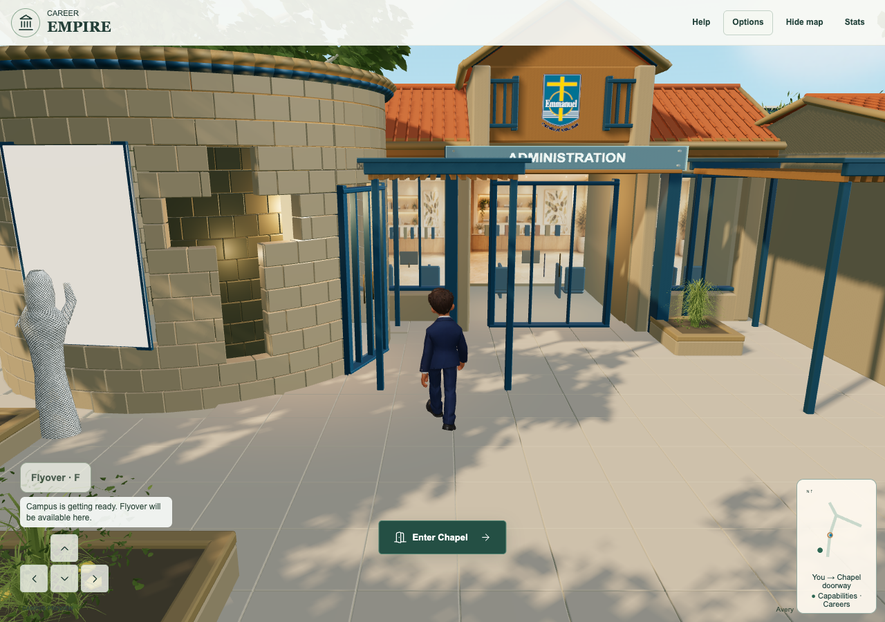
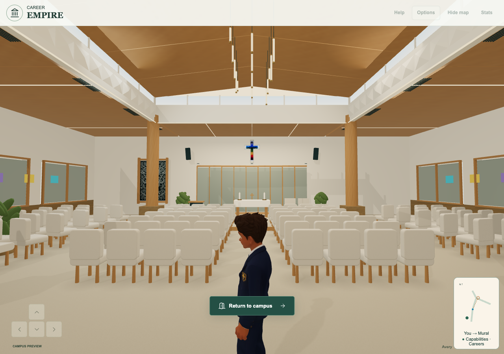
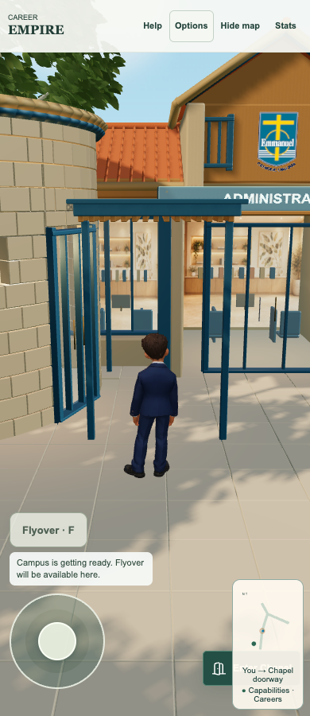
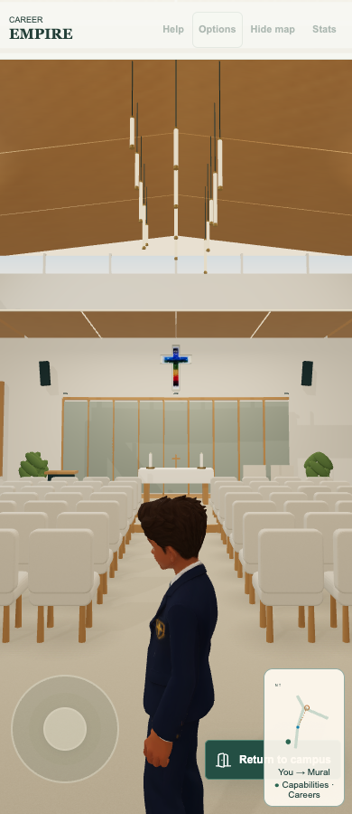

Published and independently verified
Chapel alternate-entry release 0adc2f5c20236751fe525103be06ba91d1a6d4bc is published and independently verified at the actual Career Empire game. All356 public runtime asset hashes and all5 changed runtime file hashes match. Actual native Chrome1280/390 first-day approach verifies Enter Chapel without facing alignment, mouse/automated touch entry, return and button reappearance, then unchanged physical doorway walking, ceiling scan, exit/checkpoint and walking reentry. Actual published Market/map, Notes reading/feedback/written answers, Journal contextual return, Archon lobby and same-run checks pass at both widths with zero page errors/missing responses and zero guest Notes Storage API/backend calls.398unit tests/85files,356assets/108imports and10focused checks pass. Required CI source/unit/coverage pass; inherited admin/legacy browser failures and interruption remain, no all-CI-green claim. Existing Chapel room/model/artwork, EST73a4315, Portfolio399a4da and separately staged CIf156c32 are preserved. Safari, physical-device/classroom and Tania live acceptance remain separate.
Tania to check the actual live game and Market/map links. Portfolio161 layout/context alignment, Careers Centre163 authorised-entry/camera/isolated fictional demo and EST164 Core responsiveness/media/capture remain separate successors; Flyover startup repair is preserved separately. No whole-campus or classroom acceptance inferred.
Additional Enter Chapel action
Direct clarification and scope
Tania confirms Chapel entry and the actual room are all okay: he can already walk in; she only wants the Enter button restored because approach angles can be difficult. This supersedes the earlier room/scene concern. Keep the current physical walk-in, detailed ECC room, geometry, artwork, camera and reflection checkpoint. Add only an alternate nearby clickable action.
Smallest additive change
A proximity helper offers Enter Chapel within2.8m of the existing authored doorway when town entry is ready and no modal, helper, intro, discovery, menu, Flyover or aerial mode blocks it. Facing angle is irrelevant. The action takes priority over the optional guide/companion nearby; the optional guide remains elsewhere in its existing range/help. It calls the same guarded enterChapel promise, duplicate-load protection, failure retry and navigation-generation checks. It never triggers automatically. The existing resolved-physics inward doorway crossing is unchanged.
Mouse, keyboard and touch
The same native shared action button supports mouse/keyboard and the existing primary-touch completion/cancel/compatibility-click guard. Touch entry resets held navigation like touch return. Room return remains outside the real doorway, with existing walking rearm and discovery checkpoint. No scene or artwork substitution. The camera, collision, model, Chapel source and actual reference assets are unchanged.
Exact verification
398unit tests across85files pass. The existing VM priority fixture gains the real helper/readiness/modal dependencies and its obsolete no-Enter-button assertion becomes the explicitly requested additive-button expectation; Studio/teacher/companion assertions stay intact.10focused original doorway, load deduplication/failure/navigation, touch completion/cancel/duplicate-click and nonblocking-guide checks pass. An initial focused harness used an unchanged discovery file from the wrong candidate path; it now reads that exact baseline from qualification-source. Native-Metal Chrome1280/390 first-day physical approach exposes Enter Chapel without lining up; real mouse/automated touch click enters the same room. Return and additional button reappear; real keyboard walking then crosses the unchanged doorway, ceiling scan, exit/checkpoint and walking reentry pass at both widths. Native frames/poses and screenshots retained; no teleport or gameplay replacement.356staged asset hashes/108imports pass. Required CI source/unit/coverage pass; existing admin/legacy failures and interruption retained, no all-CI-green claim.
Security, teaching and preservation
No new identity, data collection, field, Storage API, account, role, tenant access, provider, backend, telemetry, retention or permission. Current Chapel reflection/evidence behavior, optional exploration, curriculum, assessment and teacher functions remain. Only local action eligibility/touch routing changes. Original room and authored model assets byte-unchanged. EST73a4315cabinet/pan/back-video/cards/cinema/return, Portfolio399a4da, Market/Notes/Archon and separate CIf156c32 preserved. Actual Safari, physical touch/classroom and Tania acceptance remain separate.
Release status
Source-qualified7file candidate on verified73a4315. This publication closes verified EST160 and supplies the necessary exact source record for the authorized additive Chapel button; it is not a game162deployment. Genuine receipt, normal guarded main push and actual live mouse/touch button plus physical-walking/regression verification remain. Portfolio161layout/context alignment and authorized Careers Centre entry-panel/camera/demo work remain separate queued successors.

Actual live0adc2f5 native game; Tania acceptance separate.
Actual live0adc2f5 native game; Tania acceptance separate.
Actual live0adc2f5 native game; Tania acceptance separate.
Actual live0adc2f5 native game; Tania acceptance separate.playable-3d/app.js 100644:a303f8c826a67b20ac770436355ba953c679c1c7
playable-3d/chapel-entry.mjs 100644:4399c21b943154ed05fe937fadf063df03e7575a
playable-3d/guest-shell.mjs 100644:f2cbff8ebbd62403bbadc12db824dfeb2e735b7e
playable-3d/index.html 100644:999786e2b50c3ecba3c1e9e2b70e4edb358847a6
playable-3d/release-manifest.json 100644:26ee764720bf5fcb3c3c6c7cfc08e39911132dc1
tests/unit/chapel-entry-action.test.mjs 100644:568d96ab19691207f2f00982f726826f52d62f03
tests/unit/world-interaction-priority.test.mjs 100644:dc007dbb415064573e1c20c96601d9f2daee0adf